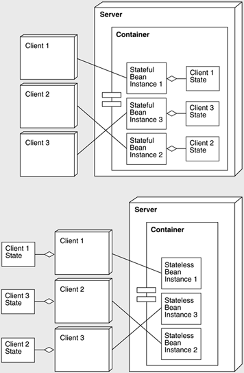

| [ Team LiB ] |
|
16.4 System Deployment DecisionsWhat we have described thus far is J2EE/EJB as it was created by Sun. However, when deploying a J2EE/EJB system, there are a number of implementation issues that the architect needs to consider. The EJB component model is a powerful way to construct server-side applications. And although the interactions between the different parts of the code are a little daunting at first, with some exposure and experience with the model, it becomes relatively straightforward to construct EJB applications. Still, while code construction is not difficult, a number of complexities remain, including the following.
In this final section, we present some of the key design issues involved in architecting and constructing highly scalable EJB applications. STATE MANAGEMENT—AN OLD DESIGN ISSUE IN A NEW CONTEXTThere are two service models that can be adopted in developing the EJB server tier—stateless and stateful models, implemented by stateless and stateful session beans. We will take an online bookshop as an example. In the stateful version, an EJB can be used to remember customer details and to manage the items the customer is placing in an online shopping cart. Hence, the EJB stores the state associated with the customer's visit to the site. By maintaining this conversational state in the bean, the client is relieved from the responsibility of keeping track of it. The EJB monitors potential purchases and processes them in a batch when a confirmation method is invoked. To make better use of limited system memory, stateful session beans are passivated when not used by the client, meaning that a bean's conversational state is written to secondary storage (typically disk) and its instance is removed from memory. The client's reference to the bean is not affected by passivation, but remains alive and usable. When the client invokes a method on a bean that is passivated, the container activates the bean by instantiating a new instance and populating its state with the information written to secondary storage. This passivation strategy has great implications for scalability. If there is a requirement for large numbers of stateful session bean instances to service individual clients, passivation and activation may prove to be too high an overhead in terms of application performance. Alternatively, a stateless session bean does not maintain conversational state on behalf of the client. The client must inform the server of session information, such as customer details and shopping cart contents, with each service request, because, for each request, the container may assign a different stateless session bean instance. This is only possible because of the pure stateless service model. Figure 16.14 shows usage of both stateful and stateless session beans. Figure 16.14. Clients' static bindings to stateful session bean instances and dynamic bindings to stateless session bean instances. To summarize, the advantages of stateless session beans include the following:
The only disadvantage to the stateless approach is that more information needs to be passed between the client and the EJB on each request. Assuming that the amount of data is not prohibitively large, the stateless session bean will most likely better support high system scalability. Entity Beans—To Use or Not to Use?A common EJB design pattern is to provide a wrapper session bean that exposes services to the client and, at the same time, accesses the business data encapsulated in the entity bean to fulfill a client request. This represents a clean object-oriented programming model. Business data, usually represented in a relational format in a database, is now encapsulated in an object-oriented format (entity beans). The various get and set methods defined for entity beans make it easy for session beans to access this data. Additionally, if container-managed persistence is used for entity beans, the developer need not explicitly develop the database access code. The risk here is a considerable performance penalty. Testing results show that, for a typical e-commerce system with an 85% read-only and 15% update transaction mix, the application architecture using entity beans achieves roughly half the system throughput compared to an architecture utilizing session beans only. The performance degradations have the following causes:
Of course, it is up to the application architect to decide if the benefits of entity beans outweigh the likely loss in system throughput. DISTRIBUTION AND SCALING ISSUESWith the popularity of Web-enabled enterprise systems, businesses are finding their back-end systems unable to cope with the volume of incoming Internet traffic. There are two ways of increasing the processing power in the server tier:
Scaling out is usually regarded as more difficult to implement than scaling up, because it requires more complex configuration and system management. The application server must also provide load-balancing mechanisms to make sure that the additional resources on different machines are fully utilized by clients. Nevertheless, a system that runs on multiple machines does provide some benefits over one running a single large machine:
Many application products provide clustering services to enable the scaling out of applications. Again, though, clustering products vary considerably, and architects need to explore these differences carefully. Distributed TransactionsMany EJB servers can coordinate transactions that involve multiple objects residing in various processes in a distributed system. Distributed transaction processing using the two-phase commit protocol is often essential in building enterprise-wide systems. An architect designing an EJB system needs to consider carefully whether distributed transactions are necessary. This is because of the overhead involved in managing them, which increases as the number of transaction participants increases. If there is no need to coordinate the transaction across multiple resource managers (or databases), there is no need for the two-phase commit protocol. Further, the transaction coordination and commit processes may involve several remote calls that pass over the network. These may be between the EJB server or container and an external transaction management process. If the distributed transaction implementation provided by the EJB server incurs additional remote calls in coordinating transactions, using distributed transactions can slow down an EJB system considerably, inhibiting overall system scalability. Experience with various object technology management and J2EE implementations indicates large variations in distributed transaction management performance. This makes it important for application architects to fully understand the configuration and deployment options available with a given transaction service. RESOURCE POOLINGApplication resources, such as database connections and sockets, must be carefully managed in a distributed system. Resource pooling exploits the fact that not all clients need exclusive access to a resource at all times. With EJBs, not every bean needs a database connection for its exclusive use. It is much more efficient to configure a system so that database connections can be pooled and re-used for different client transactions. When a database connection pool is used, the resulting connections required will be far less than the number of EJB components in a deployed system. Because database connections are expensive to create and manage, this architecture increases the overall application scalability. Furthermore, connections to the databases do not need to be reestablished continuously, thus improving application performance. Resource pooling can be applied to other resources as well, such as socket connections and threads. Pooling of components simply means that a dedicated resource for each client is not necessary. Typical configurable parameters include container threads, session beans instances, entity bean cache size, and database connection pool size. All of these need to be configured appropriately to exhibit fast response times and high overall system throughput. DEPENDENCE ON JAVA VIRTUAL MACHINE PERFORMANCEIn any Java application, the JVM is an important factor in performance tuning. Hence, to develop and deploy high-performing EJB server-side applications, several JVM configuration and performance tuning activities need to be considered. JVM heap size is one important setting. The heap is a repository for Java objects and free memory. When the JVM runs out of memory in the heap, all execution in it ceases while a garbage collection algorithm goes through memory and frees space that is no longer required. This is an obvious performance hit because application code blocks during garbage collection. Thus, in an EJB application no server-side work can be done. If heap size is huge, garbage collection will be infrequent; when it does kick in, however, it will take a much longer time, possibly long enough to disrupt normal system operations. Garbage collection can slow down (and sometime completely stop) server processing, giving the impression that the server is slow and unresponsive. To appropriately set the JVM heap size, it is necessary to monitor the paging activities on the server machine. Paging is an expensive performance overhead and therefore should be avoided on application servers by increasing the JVM heap size to match the application's needs. Another way is to watch the garbage collector by using the -gcverbose compiler option. If incremental garbage collection is an option, it is almost always best to turn it on. |
| [ Team LiB ] |
|